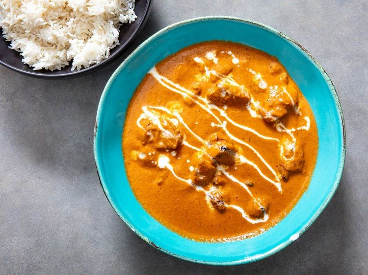

Chicken Butter Masala

Description
Chicken Butter Masala is a popular Indian dish of grilled chicken
simmered in a smooth, silky and creamy onion
tomato and cashew gravy. This finger-licking good
curried dish is popular on the restaurant menus. Also known as
Butter Chicken Masala, this is a modified version of the
authentic North Indian Butter Chicken.
Ingredients
- Boneless Chicken 1/2lb, cubed
- Butter Melted 2 tbsp
- Onions 2 medium-sized, minced
- Tomato 2 medium-sized, pureed
- Oil 2 tbsp
- Lemon juice 1 tbsp
- Garlic cloves 3, minced/crushed
- Ginger 1tbsp, minced/paste
- Garam Masala/Chicken Masala 1 tbsp
- Cream 4tbsp (or cashew paste)
- Chilli Powder 1 tbsp
- Turmeric powder 1/4 tbsp
- Crushed fenugreek leaves 1/4 tbsp
- 1 small bunch of coriander leaves / cilantro, for ganish
Directions
- In a bowl, mix chicken with salt, pepper, 1/2 tbsp ginger-garlic paste, 1/2 tbsp chili powder, turmeric powder,
and lemon juice for the chicken marinade; let marinate for an hour.
- Roast the marinated chicken in an oven at medium temperature for 5 to 10 minutes. The chicken should be
three-fourths done.
- Heat butter in a pan. Fry the onions until it turns translucent.
- Add garlic-ginger and sauté for a minute, then add garam masala. Cook for a few seconds making sure not to burn
the paste.
- Add tomato puree, salt, and chili powder. Let simmer for about 5 minutes, occasionally stirring until sauce
thickens and becomes a deep brown-red color.
- Add the marinated chicken, butter, fresh cream, the crushed fenugreek leaves, and sliced green chilies. Cook for
an additional 5 to 10 min until the chicken is cooked.
- Adjust salt, garnish with the coriander leaves. Serve over rice or naan.